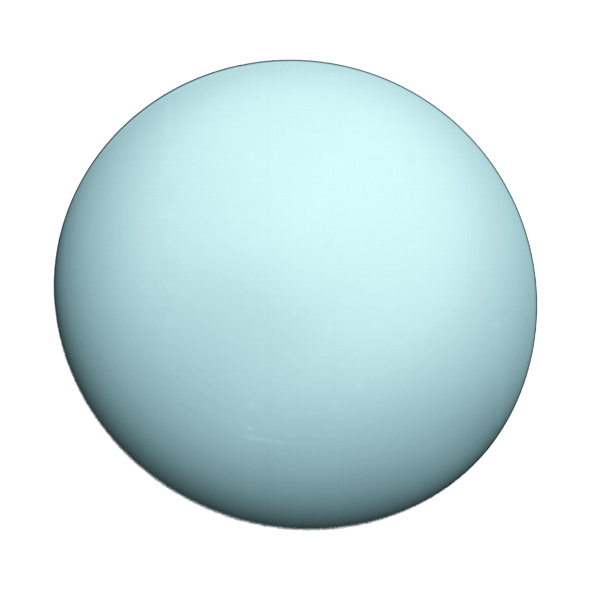

- Polar Diameter: 49,946 km
- Equatorial Diameter: 51,118 km
- Mass: 8.68 × 10^25 kg
Facts
- This planet rotates in a retrograde direction only Uranus and Venus rotate this way
- Uranus was the first planet discovered by the telescope
- Although it is not the coldest planet, it can hit the coldest temperatures of any planet
- Its moons named after characters by William Shakespeare and Alexander Pope
- Uranus goes around the Sun every 84 Earth years
